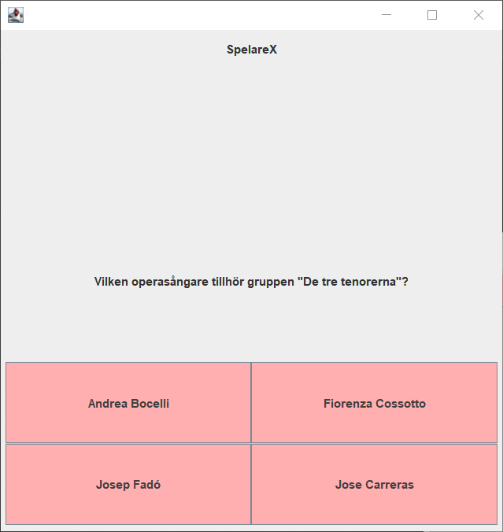
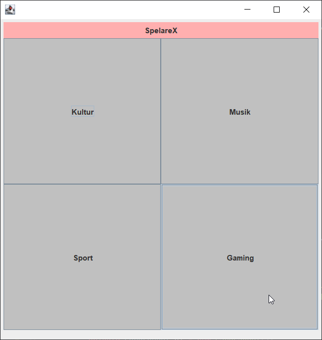
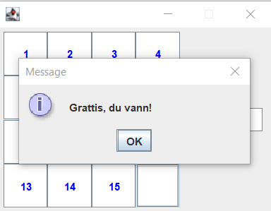
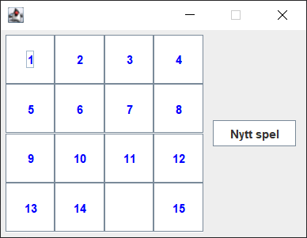

Projekt
Quiz
Detta är ett frågesportsspel med två spelare och där båda har 4 svarsalternativ att välja mellan och bara ett av svaren är korrekt. Spelarna har x antal frågor per rond och z ronder som ska spelas. Efter detta kommer det ett slutresultat med vem som vann eller om det blev lika. Programmet använder sig utav Java som programmeringsspråk och programmet består utav några tekniker så som GUI,multitrådning och klient-server
 Puzzle
Detta är ett pussel som representerar "Femtonspel" och följer dessa regler. Programmet använder sig utav Java som programmeringsspråk och programmet har ett GUI för att integrera med användaren.
 